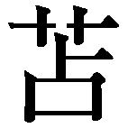
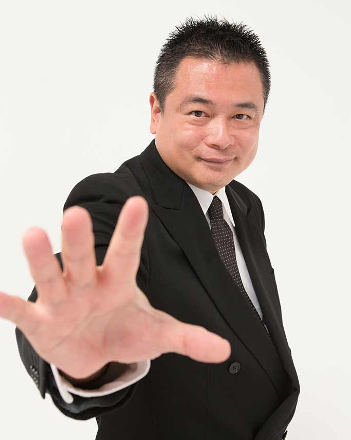
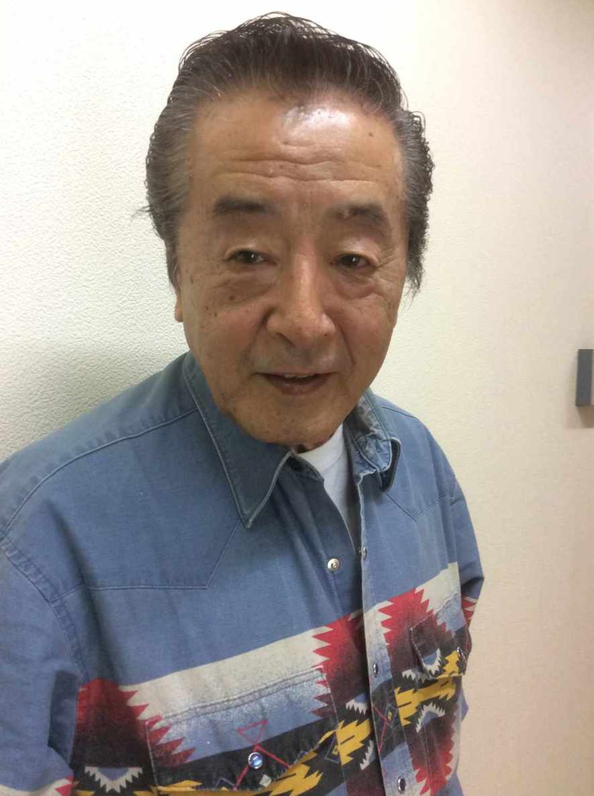

| 潜在能力を最高レベルに引き出す「変性意識入門・催眠編」 (Kindle Single) | |
| 苫米地 英人 | |
| (2016) | |
潜在能力を最高レベルに引き出す
「変性意識入門・催眠編」
Draw out your potential: an introduction to altered states of consciousness, book 1: hypnosis
米地人
本書はタイトルどおり、自らを変性意識状態──altered state of consciousnessにすることによって人間の潜在能力を最高レベルに引き出すための方法論をお伝えするものです。
人間の意識状態には覚醒状態と変性意識状態があります。
覚醒状態とは簡単に言えば普通の状態です。
普通の状態ですから、通常レベルの能力を発揮することが可能です。
しかし、人間の能力は通常レベルがすべてではありません。
いわゆる火事場のバカ力、あるいはゾーンなどといった、いつもとは違ったとんでもない力を時として発揮します。その力は変性意識状態になった時に出るもので、いわばブースト機能のようなものです。この力を使いこなすことで、私たちは仕事でも勉強でも人間関係でもこれまで以上により良くすることができるようになるでしょう。
ところが、残念ながら多くの人がその力を使おうとはしていません。
一体なぜでしょうか？
それは、そんな力を自分が持っているとはどうしても思えないからです。
たとえ、持っていると頭では理解していても、「火事場のバカ力は火事場にならなければ発揮できない」と思い込んでいます。あるいは心のどこかで「火事場のバカ力は火事場になれば発揮できる」と思っているのかもしれません。
しかし、それは勘違いです。火事場のバカ力は火事場でなくても発揮できますし、その逆に火事場になれば必ず発揮できるとも限りません。
訓練が必要なのです。訓練次第で自由に使いこなせるようになるのが潜在能力です。
しかも、それを使いこなせるようになるための訓練はとても簡単です。
変性意識状態になればいいのです。
ところが、ここで多くの人たちが挫折してしまいます。変性意識なんて簡単には入れない。みな、そう思い込んでいるのです。
密教の高僧のように瞑想の修行を何年も積んだり、自己催眠の練習をしたり、あるいは薬物に頼るようなことをしなければ、変性意識にはなかなか到達できない。そう思ってしまっています。
意識的に潜在能力を発揮するためには変性意識状態になれば可能であるのに、その変性意識状態になることが難しいと思い込んでいるために、多くの人たちが、自分が持っている本当の力を出し切ることができないでいるのです。
はっきり言いましょう。変性意識状態になることは簡単です。
それどころか、既に全員が変性意識状態になった経験を持っています。
というのも、この世で最も深い変性意識状態とは睡眠だからです。
もちろん、私たちは毎日睡眠をとっていますから、変性意識に入るだけなら誰でも毎日やっています。
「しかし、それでは変性意識になっただけで潜在能力を使うことや開発などできないではないか」そう思う人たちも出てくるでしょう。
たしかに、そのとおりで、だから、訓練が必要なのです。
とはいっても、その訓練は決して難しいものではありません。
逆にとてもシンプルです。シンプルすぎるからこそ、難しいともいえるでしょう。
というのも、すべては変性意識状態に入れるか、否かだからです。
ここに大きな壁があり、これさえ壊せば、潜在能力を活用する芳醇なる人生が待っています。
その壁の壊し方の方法論として本書で採用するのが催眠術です。
ご存知のように催眠術は被催眠者を変性意識状態にすることによって暗示を入れていく術です。深い変性意識状態となり、上手に暗示が入ると、人間は思いもよらない力を発揮します。
暗記力が上がったり、運動能力が上がったり、集中力が高まったりなどといった現象を、多くの人が催眠ショーなどで目にしたことがあるでしょう。
それは潜在能力を引き出された結果です。
催眠術は人を変性意識状態にするために長年研究されてきた技術です。
この技術を使って壁を壊し、潜在能力を自由自在に引き出す人生を手に入れましょう。
催眠は人間の潜在能力を引き出すことにおいて、とても効果的な方法であることは間違いありません。
皆さんもショー催眠などで見たことがあるでしょう。
非催眠者をイスから立てなくさせたり、新聞紙がおさつに見えるようにしたり、女の子が腕相撲で男の子に勝ったりなど、人間の身体や感覚をかなり自由に操ることができています。
なぜあんなことができるのかについてはのちほど詳しくお話ししますが、術者の催眠をきっかけにして、人々は普通では考えられない能力を発揮しています。
もしも、この力を自分自身で自由に出せることができるようになれば、仕事にしても、人間関係にしても良い結果が出るのではないか、という期待感。人々が催眠術に魅かれるのはここではないかと思っています。
しかし、私たちの多くは、どこかで催眠術など簡単に出来るはずがないと思い込んでいます。
術者になるには特別な訓練も必要だろうし、また、「催眠ショーなどに出てくる被催眠者は仕込みで、もともと催眠にかかりやすい人を選んでいるのだ。だから、あんなに簡単にかかるのだ」と。
もちろん、その通りで、術者になるにはそのための知識を得、訓練をしなければなれません。しかし、それは訓練を積めば誰でも達成できるということでもあるのです。
また、催眠ショーでの仕込みについてですが、もともと催眠にかかりやすい人を選んでいるというのは正解です。そういう人を選ばなければ、30分から１時間ほどで最高のショーを観客に見せることができないからです。
逆にいえば、多くの観客の中から催眠にかかりやすい人は誰か？ その場で、短時間でそれを見極める目こそがショー催眠術師の腕の見せ所のひとつでもあるのです。
ところが、ここで催眠に対する大きな誤解が生じてしまいます。
それは「催眠にはかかる人とかからない人がいる」という誤った見解を持ってしまう人が出ることです。
最初に言っておきますが、催眠に〝かかりやすい人〟というのは確かにいます。しかし、〝かからない人〟というのはいません。
人間ならば誰でも催眠にかかります。
短時間で済むのか、数時間かかってしまうのか、その違いがあるだけです。
ごくまれに何時間かけてもかからない人もいますが、それは、その時のタイミングや環境、術者の腕前などが関係しているだけで、催眠そのものにかからない人はいません。
人間は必ず催眠にかかるのです。
しかし、なぜ、多くの人が催眠にはかからない人がいると思い込んでしまっているのでしょうか？
その大きな原因となる、ある著名人がいます。
その著名人とはジークムント・フロイトです。
フロイトといえば、精神分析の巨人であり、無意識を最初に研究した人として有名です。
彼はジャン・マルタン・シャルコーという有名な催眠術師兼医師の弟子になって催眠を学び、臨床に使っていましたが、わりと早い段階で、「催眠術には効く患者と効かない患者がいる。人によって効果にバラつきがあるものは治療には使えない」として排除してしまったのです。
しかし、これは変な話なのです。例えば、ある美容師が「人間の髪には切りやすい髪と切りにくい髪があって、人によってバラつきがあるから、私がうまく切れなくても仕方ない」と言い出したらどう思うでしょうか？
歯医者が「人間の歯には、ドリルで削りやすい歯と削りにくい歯があって効果にバラつきがあるから、うまく穴が開かなかったらあなたの歯のせいだ」と言ったらどうでしょうか？ あなたは、その美容師や歯医者のもとを訪ねようとは決して思わないでしょう。
フロイトの場合もこれと一緒で、自分の腕が悪いのを棚に上げて、術が効かないのは患者のせいだと言ったのです。
はっきり言ってしまえば、催眠が効く人と効かない人がいたのはフロイトの催眠術がヘタだったからです。このことは現在では多くの文献によって判明しています。
悪いのは催眠術ではなく、フロイトの腕。これが真相だったのですが、当時既に有名だったフロイトが催眠術は使えないと断言したものですから、催眠術はたちまち衰退してしまうのです。
「（フロイトは治療に）催眠を用いるのは合理的でないと考え、催眠からの訣別によって精神分析は始まるとした。当時、せっかく催眠を利用してもヒステリーが再発してしまうので、この方法に失望するものが少なくなかったので、フロイトの発見はこうした潮流に支えられて催眠療法凋落の決定打となり、それまで年を追って盛んになっていた催眠関係の図書も、これを転機に激減していく」（『催眠の科学』成瀬悟策著より）
フロイトのほかにも催眠がヘタな医師はたくさんいたのです。彼らは、フロイトの言葉に飛びついて、自分の腕ではなく、催眠術のほうを否定してしまいました。
催眠に対する誤解はここから始まったと言ってもいいでしょう。
催眠は全員にかかります。
なぜそう言い切れるのか？ と疑問に思う人もいるでしょう。
たぶん、そういう人は以前、自分が催眠ショーなどを見に行って、うまくかからなかった経験があるのでしょう。
「他人はどうか知らないが、少なくとも私はかからなかった」
だから、催眠はかからない人間もいる、と思ってしまうのです。
私の知り合いにもそういう人がいました。
その人は、ある出版社の編集者で、これまで何度も催眠術者の取材をしたことがあるといっていました。彼はそのたびに催眠術をかけてもらったようですが、一度もかかったことがないのです。
もちろん、その編集者は「催眠にかからないようにしよう」と思っていたわけではありません。その逆に「なんとかして、催眠にかかろう」「催眠にかからないと失礼にあたる」と思い、必死に催眠にかかろうとしていたのですが、ダメだったようです。「私は催眠にかかりにくい体質です」と、彼は言っていましたが、のちに勘違いだったことがわかります。
というのも彼はその後、ちょっとしたうつ病になって催眠療法を受けたのですが、たった一回で催眠状態に入ったと言っていたからです。
実は、ここに催眠の秘密があります。
そもそもその編集者が取材中に催眠にかからなかったのは当然です。仕事中ですからどうしても別の緊張があります。また、「催眠にかからないと失礼にあたる」と思ったということは、本音では、その催眠術師のことを信用していません。だから、かからなかったのです。
催眠術は術者の腕もありますが、同時に被催眠者側の準備も重要なのです。
なぜなら、催眠とは自分で自分にかけるものだからです。言葉を変えればすべての催眠は自己催眠なのです。
催眠術者の腕前とは、他人を催眠に陥れる技術のことをいうのではなく、被催眠者をリラックスさせて自ら催眠を受け入れる準備が整うように導くこと。これが催眠術者の腕前なのです。
催眠を理解していない人が催眠導入の現場を見ると、どうしても術者が被催眠者に働きかけて、催眠を行っているように思ってしまいがちです。
しかし、それは錯覚で、催眠術者は被催眠者が自ら催眠に入っていくのをサポートしているだけです。
ですから、催眠にかからない人は催眠状態に入りたくないなんらかの理由を自分が持っているのです。
実際、術者が導いても催眠状態に入らない人がショー催眠でもいます。
しかし、催眠ショーに来るということは催眠に対する興味をもともともっています。そして、興味があるということは、それを受け入れているということですから、催眠状態に入らないほうがおかしいのです。
ところが、現場に来てみると催眠にかからない。かかろうと思って努力してもうまくいかないという状況に陥ってしまいます。
こういう人は催眠状態に入ることに恐怖感を持っていたり、恥ずかしさが出てしまったりで、催眠を拒否しているのです。
ですから、信頼できる術者とマンツーマンであれば、催眠というものは必ず成功します。一度でダメなら二度、三度とやっていくうちに可能となります。
フロイトも、そうやればよかったのです。すぐに術がかからなければ、なぜかからない状況にあるのか、それこそ精神分析しながら繰り返し術をかければ、百発百中で成功するようになったはずです。
しかし、フロイトは昔の医者にありがちな高圧的な態度で患者に接していたようです。自分の催眠が思うように通じないと途端に不機嫌になったともいわれています。申し訳ないですが、そういう状況では人を催眠に誘導するのはかなり難しいでしょう。
とはいえ当時の医者は権威主義的な人がほとんどですから、彼だけが悪いわけではありません。
あえていうなら、当時の医者は全般的に術者にはむかなかったということです。催眠術にとっての不幸はそこだったのです。
いずれにせよ、催眠は自分で自分にかけるもので、術者はそれを上手に導く案内人です。
ということは、催眠術が上手になる秘訣は、被催眠者が安心して催眠状態に入れるようにリードしてあげること。自分が催眠をかけてやるんだという、おこがましいことは決して思ってはいけないということです。
さて、催眠に関する誤解はもうひとつあります。
それは催眠を凄いものだと捉えすぎて、過度な期待を持ってしまうことです。
催眠を信じてくれることはありがたいのですが、信じすぎて、術者の誘導があれば、潜在能力が爆発的に上昇すると思っている人もまた問題です。
最初にはっきり言っておきましょう。催眠によって引き出せる力はあくまで自分が持っている力だけです。いうまでもないとは思いますが、突然、超能力が使えるようになったりなんてことはありません。そんなものはアメリカン・コミックの世界です。
潜在能力とは文字どおり、潜在していた力であり、もともとその人が持っていた能力です。それ以上でも、それ以下でもありません。
ですから、それ以上の力が出ることを期待する他力本願的な欲をもつのは控えてください。
しかし、そうはいっても実際の催眠術の現場ではいろいろ不思議なことが起こります。女の子が男の子に勝てるほどの腕力が出たり、普通では考えられない暗記力を発揮したり、過去の記憶の中から自分自身ですら忘れていたことを思い出したりします。
これは一体どういうことでしょうか？
まず、腕力や暗記力などが普段以上に向上する理由はとても簡単です。
それは身体を守るためのリミッターが解除されるからです。
実際、腕相撲で男の子に勝った女の子は次の日、腕の筋肉が激しく痛みます。それは、それまでの人生の中で一度も出したことがないほどの負荷が腕の筋肉にかかったからです。
実はこれは諸刃の剣で、ひとつ間違えると怪我をします。
ずいぶん前ですが、繁華街のゲームセンターで、酔っぱらった男性が腕相撲マシンと対決して腕の骨を折る事件が続発したことがありました。
これは酒に酔ってリミッターが外れて、骨の耐久力以上の筋力を出してしまった結果です。
人間は自分の身体を守るために能力を解放しきらないようにリミッターを設けているのです。催眠はそれを解除することで通常では出ない力を発揮させています。
これが火事場のバカ力の正体ですが、リミッターは必要だからあるわけで、そこを理解しないと腕相撲マシンで腕を折る酔っぱらいのようになってしまいます。
ですから潜在能力を引き出すときは慎重の上にも慎重をきしてやる必要があるでしょう。
できれば、術者に見てもらいながらやるのが理想です。
もちろん、慣れてくれば自分でコントロールしながら、潜在能力を解放することは可能になりますから、十分に研究、修行しておいて損はありません。
催眠に対する誤解が解けたら、催眠に対する疑問も解いておきましょう。
多くの人にとって催眠といえば、催眠術者が被催眠者を舞台にあげて、さまざまな術を披露するものという印象でしょう。
しかし、あれを見て思うことはなぜあんなに簡単に術がかかってしまうのか？ ということではないでしょうか。
術者の得意な催眠法にかかりやすい人を選んでいるにしても簡単過ぎるように思えてしまいます。
インチキだと疑う人はさすがに論外ですが、自分の名前を忘れたり、目の前にあるモノが見えなくなったり、というのは普通の感覚で見てもあまりにも不思議です。
こういった疑問を解くためには、催眠がどのようなメカニズムで起きるのかを理解する必要があります。
まず、催眠関係の書籍を見ると、催眠とは変性意識状態に導くこと、あるいは変性意識状態そのものだとよく書いてあります。ただし、変性意識状態については、以前は＝トランス状態と解釈していました。
しかし、現在では、酩酊状態や恍惚状態でなくても人は変性意識に入ることが確認されています。
ひとつ例を挙げれば、音楽を聴くという行為です。
音楽を聴いて「この曲はいいな」と思ったことが誰でも一度はあると思いますが、その瞬間、人は変性意識状態に入っています。
変性意識状態の定義は酩酊状態であるとか、そういったことではなく、人間の意識が物理空間ではないところに臨場感を持った瞬間から始まるのです。
ですから音楽を聴いている時はもちろん、小説を読んでいる時などでもそうです。ストーリーに夢中になり、ハッとしたり、怒ったり、涙を流している時は、確実に目の前の現実ではなく、あなたの頭の中で構築された想像の世界、つまり情報空間に臨場感を強くもっています。
だから、電車の中で本を読みながら涙が出てしまうのです。止めようと思っても止まらないのです。
これが変性意識状態です。
ですから、さきほどの疑問である「なぜあんなに簡単に催眠状態に入ってしまうのか？」に対する答えは明らかです。
人はもともとすぐに催眠状態に入ってしまうのです。自分で思っているよりも遥かに簡単に私たちは変性意識状態になってしまいます。
はっきり言えば、ちょっと考え事をしながら道を歩くだけで、もう変性意識状態です。
しかし、多くの人は自分が変性意識になったことに気づきません。それどころか、「人間は簡単には変性意識状態にはならないはず」と思い込んでいます。だから、不思議に思えるだけで、本当は催眠状態になるのは人間の生理機能としてごく自然のことだったのです。
では、なぜ、私たちはこんないとも簡単に変性意識状態に入ってしまうのでしょうか？
実は、これには、ホメオスタシス（恒常性維持機能）という外部環境に対する人体の適応が関係しています。
ホメオスタシスとは、身体の状態を一定に保つための機能で、具体的に言えば、暑くなってきたら身体から汗を出す、寒くなれば毛穴がしまって熱を逃さないようにする、といった外部環境に対する人体の反応です。
生物ならば必ず持っている生命維持の機能ですが、高度に脳が発達した人間は現実世界だけでなく情報空間にもホメオスタシスを適応させることができます。
サスペンス映画を見ながら手に汗を握る。酸っぱい食べ物を想像しただけで口の中にツバが湧いてくる。こういったことは情報空間に対してホメオスタシスが働いた結果です。
さきほど紹介した小説を読みながら涙を流すこともホメオスタシスの適応であり、その際、スイッチになるのはそれが現実か、情報空間かどうかではなく、臨場感です。臨場感をより感じる世界に対して、ホメオスタシスは発動するということです。
つまり、脳にとっては現実世界と情報世界の区別はなく、臨場感を感じたほうに機能するだけだったのです。
だから、人はいとも簡単に変性意識状態になってしまうのです。
となると、ここで考えなければいけないのは現実世界とはなにか、ということです。
例えば、私たちは目の前の風景を目で見、音は耳で捉え、匂いは鼻で感じています。
五感によって外界の情報を集め、脳の中で統合することによって目の前の風景を認識します。
しかし、その風景は本当にあなたが見ているとおりのものなのでしょうか？
確かにあなたの網膜には外の景色が画像として映っているでしょう。鼓膜は外界の音を拾っているでしょう。
しかし、脳の中で統合された時、すべての画像情報、音声情報を認識しているわけではありません。なぜなら、それはあまりにも膨大すぎるからです。
人は自らの重要度によって情報を取捨選択し、モノを見、音を聴いているのです。
それは誰かと街を一緒にしばらく歩いただけですぐに実感できます。
たとえば仕事の同僚と歩けば、あなたと同僚は職業に関する情報を自然に収集していることでしょう。仮に不動産屋さんだった場合、どこそこに空き物件があった、空き地があった、建設中のマンションの施工主は誰だったとかは黙っていても情報収集し、あとで２人でいろいろ話すことが可能です。
しかし、あなたがスポーツ好きで、同僚が落語好きだった場合、「あそこにフィットネスジムがあったから、今度行ってみよう」と誘っても、「そんなのあったっけ？」といわれてしまうかもしれません。
また、同僚から「あの喫茶店、夜は落語会をやるみたいだけど、行ってみようよ」と言われても、そんな喫茶店のことなど覚えていないでしょう。
不動産情報については盛んに情報交換ができたのに、趣味の話になると、まるで話が噛み合わないなんてことは普通に考えられるのです。
同じ風景を見ていたはずなのに、なぜそんなことが起きるのかといえば、人は自分の重要度によって目の前の世界を見ているからです。
このように現実の世界。いま目の前に広がっている世界でさえ、私たちは脳内で情報操作を加えて〝見て〟いるのです。
つまり、現実世界もまた情報空間だということです。
人は重要度によって世界を見、現実を加工しています。
目の前の景色をあなたは現実だと思っているでしょうが、それは脳が情報の取捨選択をして、あなたに見せているだけなのです。
だから、私たちは他人がつくった仮想現実の世界＝催眠世界に簡単に誘われてしまうのです。
現実世界もまた情報空間であることがわかると、人間と催眠との関係がより明確かつ密接であることもわかってくるでしょう。
さきほども言ったように、催眠状態とは変性意識状態のことをいいます。
そして変性意識状態とは情報空間に臨場感を持っている状態です。
催眠は情報空間に臨場感を持っているときに暗示を入れることで可能になります。
この場合の暗示とは術者側が見せようと思う世界の記述です。
「さあ、これからあなたは私のことが大好きになります」
といった暗示は、被催眠者から見れば、それが世界のすべてになります。
だから、受け入れてしまうのです。
しかし、ここでも多くの人々が疑問に思うことが出てきます。
それは「大好きになりますといわれただけで大好きになんかなれない」ということです。普通の状態であれば、ほぼ不可能です。
しかし、催眠状態＝変性意識状態であればそれは可能です。
なぜなら、人間の五感はあやふやで、自分で思っているほど確固たるものではないからです。それを多くの人がわかっていないから不思議に思ってしまうのです。
たとえば、ショー催眠などでよく見かける味覚の支配を例にとってみましょう。
変性意識状態で暗示を入れられた被催眠者は酸っぱいレモンを甘く感じたり、これまで大嫌いだったものが好きになり、おいしいと感じるようになります。
見ているほうはとても不思議に思えるようですが、実は味覚の支配はそれほど難しいものではありません。
というのも、味覚情報は嗅覚情報がほとんどだからです。その証拠に鼻をつまんでモノを食べてみるといいでしょう。たいていのものはよく味がわからないはずです。
または、プラスチックの皿とプラスチックのフォークで食べさせられたら、どんな高級料亭の料理であっても、「おいしい」とは感じません。つまり、味覚は視覚情報でもあります。
また、サクサクという歯触りにしても、それは歯触りではなく音、つまり聴覚情報です。
要は、「おいしい」という味覚情報は嗅覚、視覚、聴覚といった情報を統合したものなのです。
ですから、甘いモノを酸っぱくする。その逆に辛いものを甘くする。おいしいものをまずくする、まずいものをおいしくするなどは、脳内情報の書き換えだけで簡単にできるのです。
そもそも動物にとって食べ物がおいしい必要はありません。
苦かろうが、まずかろうが、生存にとって必要であれば摂取する。
それが食べるという行為です。
本来、感覚器官としての舌の機能は、毒か、毒ではないか、がわかれば十分です。逆においしくないから食べたくないといって貴重なエサをムダにすることのほうが生物としては間違った行為です。
聴覚は、肉食動物の声や密かに近づいてくる足音など危険な音をいち早く察知するためであり、視覚も同様です。嗅覚はエサが食べられるかどうか、敵の臭いが付近でしないか、そういったことを探るための大切な器官です。
ところが、現在の人間には天敵はいませんし、食料も基本的には安全なものばかりです。肉食動物の襲撃を警戒したり、毒か否かを舌や鼻で確認する必要はありません。
ですから、人間はいま五感を、危険を察知するためではなく、おいしいか、おいしくないかなどの高度な情報処理のための器官としてのみ使用しているのです。
見るものすべて、手に取るものすべて、口に入れたもの、耳に聞こえたもの、匂いなど、どれひとつとっても単純な情報処理をしていません。
実際、どこか旅行に行けば、街並みがおしゃれだとか、この土地の水はおいしい、だとか高度な情報処理を常にします。
この行為が五感情報の統合化をより推し進め、すべての情報が複雑化していく要因になります。
当然ながら複雑化すれば、それだけ外部からの情報操作も楽になります。
毒か、毒ではないかだけを判断している時であれば、「これは苦い。毒だから食べない」「酸っぱいから毒だ。捨てる」で済んでいたのに、苦味だ、酸味だといって味のひとつにしてしまったため、判断が何段階も増えてしまっているのです。増えればそれだけ誤情報を書き込まれる（要はウソを刷り込まれる）チャンスも増加するということになります。
例えば、老舗料亭で出される料理が「おいしい」のは、老舗ならではの建物の古色があり、古色に相応しい立ち居振る舞いをする女将がいて、料理は上品な器に盛られ、それを絶妙のタイミングで出してくれる仲居さんがいるからです。そういったものがすべて揃ったところで、初めて料理人が腕をふるった料理が「おいしい」となります。
ところが、仲居さんの態度がちょっとでも悪かったり、器がほんの少し欠けていると、もう「おいしくない」に変わってしまうのです。
料理そのものは変わっていないのに付随情報によって評価が反対になってしまうことすらあるのです。
もうひとつ例を挙げましょう。
私たちはなぜ毎年何着も服を買うのでしょうか？
去年の秋に買ったものは今年も使えるはずです。
しかし、今年もまた何着か欲しくなってしまいます。
今年の冬はとびきり寒そうなのですか？ だから、厚着の用意をしておかないと凍死の危険があるのですか？
そんなわけはありません。
テレビや雑誌、街を歩く人々の服装を見て、「欲しくなって」しまうのです。
「節約するから今季は買わない」と決めていても、街に出ると衝動買いしてしまうのです。
これも外部からの情報操作です。
私たちは情報を複合して判断するようになってしまったがために、簡単に判断をひっくり返されるようになってしまっているのです。
それはまた、現実空間そのものがすでに高度な情報空間になっているということでもあるのです。
以上が、内部情報が簡単に書き換えられてしまう理由です。
しかし、そうわかっていても、やはり不思議なのがなぜ、術者にいいなりになってしまうのか？ です。
確かに情報が書き換えられやすいというのは理解できますが、私たちは通常拒否することもできるはずです。
どう見てもおいしくなさそうなものなのに口にしてみると「意外においしい！」ということだってありますし、今年のiPhoneはいらない、買い換えないという判断も容易にできます。
ところが、変性意識状態に入った瞬間、被催眠者はどういうわけか、それができなくなります。
１から10まで術者の言いなりなのです。
一体これはどういうことでしょうか？
実はここにこそ、変性意識状態の秘密が隠されています。
私たちは通常の意識状態の時に「これからあなたは◯◯が大好きになります」と言われてもなかなかそれに従うことはできません。
◯◯が大嫌いなものであれば、積極的に従おうとしてもほぼ不可能。嫌いなものはどうしたって嫌いなままです。
通常の状態ではどんな言葉であっても誰からの言葉であっても嗜好や志向、行動などを変更することはかなり難しいということは誰もがわかるでしょう。
強烈な体験を伴う固い決意でもなければ、なかなか人は自らの行動を変えたりはできません。
なぜならそれが自我だからです。
ところが、変性意識下では違います。「これからあなたは◯◯が好きになります」と術者に言われるだけで、◯◯が好きになってしまいます。
そこで入れた暗示は通常の意識状態に戻っても消えず、「あなたは◯◯が好き」なままなのです。術者に解いてもらうか、睡眠をとらない限りはこの暗示はキャンセルされません。
なぜ、術者が入れた暗示にあそこまで従ってしまうのでしょうか？
術者は変性意識時になにか特別な、観客にはわからない特殊な暗示を入れているのでしょうか？
もちろん、術者はそんなことはしていません。
実は、人間は一旦、変性意識状態になってしまうと、誰でもとても素直になってしまうのです。言われたことをそのまま丸ごと受け入れてしまいます。
その理由をわかりやすくいえば被催眠者は、この時、幼児のようになっているということです。
どんな動物も幼児の時は親のいうことを聞きます。できる、できないは別にして親の言葉どおりにしようと最大限努力します。
なぜなら、そうすることが最も生存の確率を高めるからです。
つまり、術者の言いなりになる理由はただひとつ、動物としての摂理に従っているからです。変性意識状態とは素直な幼児の心で、そこに暗示を入れるから、それを実現させるべく全力で取り組むのです。だから、潜在能力が発揮されるのです。
変性意識状態になっただけで、なぜあんなに言うことを聞いてしまうのか、の答えは簡単で、変性意識状態とはそもそもそういうものだからです。生き残るための最良の方法が「言われたとおりにする」ことだからです。
ですから、催眠の勘所は、変性意識状態に入れるか、否か、なのです。
この状態に誘導することができれば、催眠は１００％完成したと言っても過言ではありません。
さて、次章では、私も理事をしている日本催眠術協会の理事長、理事たちの言葉を紹介します。
理事たちは自らの経験を通じて、催眠とはどういうものかを語ってくれています。
彼らは催眠術のパフォーマーとして数多くの被催眠者たちと向き合い、30分、１時間という時間的制約のある中で、催眠をショーとして見せてきました。つまり、見知らぬ人たちを変性意識状態にすることにかけては、日本でも指折りの人たちと言っていいでしょう。
理事たちが語った変性意識状態というものは理事たちが多くの被験者と接することによって得た実感です。
その証言はとても貴重なものであり、催眠を理解する際にはとても役に立つものだと思っています。
この章では、日本催眠術協会の理事たちの言葉をお伝えします。
私のスタッフが各理事たちのもとを訪ね、催眠とはなにかについて取材してきたものをまとめてあります。
日本催眠術協会は人間の意識の役割に関する研究・教育・啓蒙活動を行うことにより、人々の日常生活や仕事上において、高いモチベーションの保持や目標に対する動機づけの実現に寄与することを目的に２００９年１月１日に設立された一般財団法人です。理事長には催眠歴50年以上の吉田かずお氏が就任し、理事には川上剛史氏、南裕氏がいます。私は代表理事として参加しています。
各氏は術者として日本を代表する方々ばかりで、多くのメディアにも出演しています。たぶん、顔や名前を見てピンとくる読者も多いのではないでしょうか？
３人の術者はそれぞれ異なるバックボーンと技術を持っていますので、それぞれの言葉に耳を傾けるのはこれから催眠を学ぶ上で大きな糧となるはずです。
催眠とはなにか？
そう尋ねられたら、私は「確信です」と答えるでしょう。
わかりやすい言葉にすれば「思い込み」です。
「思い込み」ということは、この世に催眠は「ない」ということになります。それはそうですよね、思い込んでいるんですから。
ただし、ある視点からみると、催眠は「ある」んです。
喩えるならば、パントマイムで表現するガラスです。パントマイマーの技術がしっかりあれば、ガラスの存在感は表現できます。しかし、本当にガラスがあるわけではありません。
催眠もこれと同じで〝ないもの〟を表現しているのです。
ないものを表現するための技術が〝確信〟にあたります。
目に見えないものを自分のものにするためには「確信」を持つしかありません、これは米地先生も同じことをおっしゃっています。
「確信を持つ」これが催眠の奥義です。催眠習得用のＤＶＤの中でも、ホームページの中でも、テレビや雑誌の取材でも、いつも言っている、正真正銘、嘘偽りのない奥義です。これを会得すれば、必ず、催眠術を使えるようになります。
では、何に確信を持てばいいのでしょうか？
それは「催眠はある」ということに、です。
さきほども言いましたが、催眠は、ある視点から見ると「ある」ものです。つまり、催眠はあると確信することが術を会得するためのキモなのです。
これを説明するには私自身の経験を紹介するのがもっともわかりやすいでしょう。
当然ですが、私もはじめから催眠術が使えたわけではありません。最初は皆さんと同じように何度やってもうまくいかないという日々が続いていました。主な実験台は妻でしたが、教えてもらった暗示の言葉やテクニックを使ってもなかなかかかりませんでした。
そんなある日です。私は自宅に催眠の先生を招きました。話題は当然、催眠の話で、自分の失敗談などを話しました。先生はその話を聞き終わったあとで、あっさり私の妻に催眠をかけてしまったのです。あまりの鮮やかさと、自分があれだけやったのにかからなかった妻を一瞬で催眠状態にしてしまったことへの驚愕。それが一瞬のうちに私の心の中を駆け抜けました。
その時です。先生は私の手を取って、パッと暗示を入れて固めてしまったのです。いくら開こうと思っても、もう手は開きませんでした。
「あっ、本当に催眠術ってあるんだ。自分もかかるんだ」と思い切り信じた瞬間でした。
実を言えば、私が催眠にかかったのはこの時が初めてだったのです。それはある種、恍惚とした体験でした。先生はすぐに術を解こうとしたのですが、私はそれを断って、しばらく開かない手を、感動とともに味わったのです。
そこからです。私の催眠の技術がぐんぐん上達したのは。
「催眠はある」ということを「感動」とともに「確信」する。これが催眠の奥義になります。
ですから、私も催眠術を教える時は最初に生徒さんに術をかけて「確信」してもらいます。「これが催眠ですよ。これからあなたはこんなことができるようになるんですよ」というのをしっかり体験してもらいます。
催眠状態について少し詳しくお話ししましょう。
人には自分が意識できる意識状態と自分では意識できない無意識状態があり、意識できる状態を「顕在意識優位な状態」といい、意識できない状態を「潜在意識優位な状態」といいます。
この「顕在意識優位な状態」と「潜在意識優位な状態」の間にあるのが「催眠状態」であると私は定義しています。
人は顕在意識の水準が下がると催眠状態に入っていきます。
催眠状態に入ると、人は暗示に反応しやすくなりますから、術者は暗示を利用して潜在意識と直接対話をしていきます。
これが催眠術のメカニズムです。
ただ、生徒さんの中には一度も催眠にかかったことがない人もいます。「催眠のことは信じていますし、かかってみたいと思っているのですが、でもかからないんです」という方もいらっしゃいます。
そういう方には「昨日の夜なにを食べましたか」と聞くことにしています。すると、少し考えてからカレーなどと答えます。
この時、既にその人は変性意識状態に入っています。というのも過去の記憶をたどったからです。
過去の記憶は顕在意識と潜在意識の間の変性意識状態の中にすべて埋蔵されていますから、過去の記憶にアクセスするためには変性意識状態になる必要があるのです。
実際、いまご自分で記憶をたどってみてください。昨日の夜はなにを食べましたか？ それを思い出そうとすれば、目の前の風景よりも意識は頭の中のほうに入っていく感じになると思います。目をつぶってしまえば、さらに思い出しやすくなるはずです。
そうやって、いまあなた自身が行ったこと。それが変性意識状態への導入です。
催眠にかかったことがないという人は催眠状態があまりにも当たり前すぎて、自分が催眠状態に入っていることすらわかっていないのです。
もうひとつ例を挙げれば、恋をするのも催眠状態です。なぜなら、相手の良いところしか見えないからです。恋愛はある種の催眠状態で、だから覚めると別れてしまうのです。
では、なぜ、催眠から覚めてしまうのでしょうか？
それは疑うからです。恋愛も「この人ってこんな人だったの？」と疑い始めれば、あっという間に恋心も萎えてしまいます。
ですから、信じなければ催眠にはかかりません。
例えば、漫才師さんはボケとツッコミに分かれますが、催眠はツッコミの方にはほとんどかかりません。押してダメなら引いてみろという人にはかからないのです。押してダメな扉でも押し続ける人。疑わないで、この扉は押したら開くんだといって押し続ける人がかかります。
ただし、ここで面白いのは東大生です。私は彼らに催眠をかけて失敗したことが一度もありません。頭がいい方、集中力のある方はほぼかかります。たぶん、彼らは自分を催眠状態にしながら勉強してきたのではないかと思います。
さきほど催眠は「確信」することだと言いました。
これを別の言い方にすると、催眠はメッキともいえます。
例えば、人間の心に魂があるとします。別名、命です。人の身体は肉体と心と命でできています。これらが三位一体となって健康を維持しています。ですから、心が病んだり、肉体が病んだり、命が病んだりするとうまく機能しなくなります。その中の命の部分である魂には、人それぞれの「思い込み」が貼り付いています。「自分は男で、どこの学校を出て、どんな仕事をして、年収はいくらで、なにが得意で、なにが不得意で、親はどんな仕事をしていて」といったものがベタベタ貼り付いて一人の人間になっています。
催眠術もこれと一緒です。「あなたはイスから立てなくなる」「名前を忘れてしまう」「ネコになってしまう」「酸っぱいものが甘く変わる」など、こういったものはみんな、オリジナルの魂にメッキしたものです。新しい別の思い込みを貼り付けているのです。
「あなたは自分の名前を忘れてしまいます」という暗示をかけて忘れてしまうのは本当に名前を忘れたわけではなく、「自分の名前を忘れる」という思い込みを貼り付けただけです。ですから、時間が経てば剥がれて名前を思い出すのです。
ところで、催眠には、ショー催眠のほかにもうひとつ、催眠療法というものがあります。こちらはオリジナルの魂に貼り付いている思い込みを剥がしていくものです。
ショー催眠は貼り付けで、いろんな思い込みをメッキしていく作業ですが、催眠療法はその逆で、もともとある思い込みを剥がしていきます。
自分はダメな人間だという思い込みがベタっと貼り付いているのを剥がす。自分は気が弱い、自分には才能がないという思い込みを剥がす。そうやって、自分はダメだ、ダメだと言って回っている悪い思い込みを剥がしていき、こんなものは本当の自分じゃない、自分が作り出した単なる思い込みなんだということを理解していくものが催眠療法の概念です。
思い込みを剥がしていくと、最終的には素直で正直な素の自分が出てきます。自分の中から出てきた気付きが魂、良心であり、それが人を本当に癒やす力になります。
さて、最後にとても重要なことをお伝えしましょう。
それは「私たち催眠術者は被験者に催眠をかけているわけではない」ということです。ショー催眠などで、私たちは、舞台に上がってきたお客さんたちに術をかけ、さまざまに操っています。しかし、あれは術者がお客さんに術をかけているのではないのです。術をかけているのはお客さん自身です。あれはお客さん自身による自己催眠なのです。
では、術者は舞台の上でなにをしているのか？
それは自分自身に催眠をかけているのです。自分が深い催眠状態にあるからこそ、お客さんは催眠状態になれるのです。パラドックスのように感じるかもしれませんが、これが真実なのです。
つまり、術者も含めて、すべての催眠は自己催眠なのです。
これを体感とともに気づくことが出来れば、催眠術者としては一人前です。
催眠を極めれば極めるほど、すべての答えは自分の中にある、ということがわかります。本当は自分の身体も心も自分の好きなようにできるのです。それを通常は努力というような言葉で表します。東大生がなぜ東大に入れたのか？ それは努力したからです。しかし、催眠術者の目から見ると、「しっかり思い込めたから」ということができます。いくら才能があっても思い込めないと能力は発揮できません。思い込めれば、自分が持っている力、潜在能力も含めて、最高の力を発揮することができます。
リソースはすべて自分の内側にあるということです。

南裕（みなみ・ゆたか）
催眠術師・催眠療法士、一般財団法人・日本催眠術協会・理事。
昭和38年７月31日生まれ。催眠術スクールを主宰し、積極的に後進の指導にあたるほか、催眠に関係するイベントやグッズの企画、制作、運営などを手がける。自らメディア出演するだけでなく、テレビ番組等で多くの催眠術監修も行っている。
ボクはプロの催眠術師になって約50年ですが、常識では説明がつかない現象をいくつも経験しているんですよ。例えば、被験者を催眠状態にして「あなたの右腕の神経は私が持っているこの大根に移りました」とやる。その大根を針で刺したりすれば被験者は「痛っ」となりますが、これは催眠術者にとっては別に不思議でもなんでもない、ごく普通の感覚支配です。
ところが、大根を別の部屋に持って行って、被験者から見えない状態にして針で刺しても被験者は「痛っ」となる時があるんですね。これが不思議で仕方ないんです。これはもう感覚支配を超えています。
大根の代わりに人形でもやったことがありますよ。「あなたの神経は全部人形に移りました」とやって人形の腕をくすぐると被験者の腕もくすぐったくなる。ところが、被験者に目隠しをして人形の足の裏を触ると、被験者も足の裏がくすぐったいとなるんですね。実験ですから、厳重に目隠しをしているのに、こういう現象が起きるんです。
あるいは、「トランプに手をかざすと赤だけフワッと温かくなりますよ」という催眠を入れると本当に赤ばかり当てられるようになる人もいました。
これは科学者の前でもやりましたけど、みんな考え込んでいましたね。
こういう体験をすると、人間には、まだ科学では解明できない、不思議な力があるような気がします。
ボクは子供の頃に講道館に通っていて三船久蔵先生から柔道を習っていたんですよ。三船先生は柔道の神様と呼ばれた人で体重がたった49キロしかないのに１００キロを超える外人さんをポンポン投げていました。とはいっても、柔道はもともとそういう技ですから、当然といえば当然なのですが、ボクが驚いたのは腕相撲でも腕の太い黒人に勝ったのを見た時です。これはもう神技だと思いましたね。力ではない、かといって技だけでもない、得体の知れない強さを先生は持っていました。ああいうのを間近で見ると、人間にはまだ解明できていない力があるような気がします。
いまいった不思議な現象や三船先生のような神技的なものは誰もが出せるものではないかもしれません。ただ、変性意識状態になった人間は普段とはまた違った力を引き出すことができるとボクは確信しています。そこはまだ科学がしっかり研究していない分野だと思いますよ。
わかりやすく言ってしまうと催眠とは暗示です。
昔、あるプロ野球選手に、「球が止まって見えるようになる」という暗示を入れて、それを引き出す自己催眠のやり方を教えたら次の日、ホームランを打ってスポーツ新聞にドンと出たこともあります。ボクシングの四回戦ボーイ（新人プロボクサー）にもよく教えました。彼らに暗示をかけるとまず百発百中で勝ちますよ。四回戦ボーイはだいたい緊張でガチガチになっていて普段の実力が出せない。だから、勝つのは普段の力を出せたほうです。そういう時に催眠をかけて、リラックスさせてやると自分の実力を出せて勝ちますね。自分の一番調子が良かった時の状態になったら大抵勝つんですよ。
その逆に自分で自分にマイナスの催眠をかけてしまう人も多いですよ。
ご老人なんかに多いのは「年齢の暗示」です。ヒザが悪い、腰が痛いと言って病院に行ったり、鍼灸に行ったり、いろいろやるのに一向に良くならない。それで最後にボクのところに来たりする人が多いんですが、そういう人の治療は大変です。「この歳だからもう治らないだろう」という暗示を自分でかけていますから、最初に暗示の力がどれほど凄いのかを体験してもらわなければなりません。ショー催眠のようにイスから立てなくしたり、手がテーブルに吸い付いて離れないなんて治療とは全然関係ない催眠をやって、暗示の力を理解してもらうと「もう治らない」という思い込みがいかに病気に悪いかもわかる。治療はそれを理解してからになります。「年齢なんか関係ない。自分は治るんだ」と思わなければ、どんな治療を受けても治りませんからね。
病気でいえば、医者のほうにも問題があります。「今日は顔色が良くないですね」なんて言葉を平気で言ってしまう医者はうかつですよ。これはいわゆる「白衣の暗示」で、医者に言われたら、患者はそういう悪い暗示に引っ張られてしまう。だから、たとえそう思ったとしても、患者に向かって言ってはいけない言葉です。ボクは何人もお医者さんに催眠術を教えていますけど、「白衣の暗示」から教えます。
注射の時もいまは「チクッとしますよ」なんてことをいいますが、あれ昔は言わなかったですよ。「チクッとしますよ」なんて言葉を言われたら逆に意識が腕に集まっちゃいますから痛さを感じやすくなります。こういう暗示を与えながらやるというのは余りにも催眠の力を知らなさ過ぎる。おろそかにしているお医者さんが多過ぎますね。
いまやっとアメリカなんかでは統合医療ということで催眠や気功の研究をするようになってきましたが、日本ではまだまだですよ。日本統合医療学会はあるのに催眠が入っていないんです、気功は入っているのにですよ。その辺、もう少し柔軟に考えられるようになると、最初に紹介した不思議な現象なんかも解明できるようになると思うんです。
催眠術を上達させたいと思ったら経験あるのみです。
単純に何人に催眠術を施したかで上達具合は変わってきます。１００人やった人より３００人、３００人やった人よりは５００人に催眠を施した人のほうがうまくなります。
ただ、催眠は武道とよく似ていて実践経験がものをいうんです。例えば、喧嘩が強くなりたいなら道場で組手ばかりやっているよりも、街で喧嘩を10回やったほうが強くなります。ボクは柔道のほかに拳法もやっていたんでよくわかるんです。
催眠における道場の組手にあたるものがショー催眠です。暗示をかけてネコにしたり、自分の名前を忘れさせたり、水を酒だといって飲ませて酔っ払わせたり、こういうことをできるようになると自信がついてきます。
しかし、なにより自信がつくのは催眠治療です。これが実践にあたります。車イスに乗っている人の足でも治して歩けるようにしてしまう。慢性的な身体の痛みをポンポンポンと患部を叩いただけで取ってしまうといったことをやっていくと、本物の自信がついてきます。本人が思い込んでいるものを解きほぐして、よい方向に導いていくのが催眠術ですよ。
そういう意味でいうと、米地先生の実践経験は凄いですよ。中には先生の顔を見ただけで治ってしまった人もいます。なぜこんな現象が起きるのかというと、何百人と治した結果、自分の術に対する自信を十分に持っているからです。催眠はこの強い自信が力になるんですよ。
催眠はなんのためにあるのかといえば、世のため人のためです。術ができるようになって、相手を操ることができたといって喜んでいるうちはまだまだです。自己暗示から病になってしまった人を治す、あるいは自分自身の能力を１００％発揮できるように潜在能力を引き出すために使うべきですよ。
こういった催眠を身につけたいと思ったらどうしたらいいかといえば、南先生のところでも教えていますし、ボクのところでも教えていますので問い合わせてみてください。月に一度ぐらいの割合で日本催眠術協会のイベントもありますから、そちらに来ていただければ、気軽に催眠を体験することもできます。
いますぐやってみたいというのであれば、自己催眠を習得するといいと思いますよ。一分間呼吸法というボクが考案した導入法があって、これが一番自己催眠に入りやすいんですよ。
やり方は息をはく時に身体の力を抜いていくだけ。最初は手、次は足と順々に抜いていく。呼吸は５秒で吸って10秒で吐くようにして１分間で４回呼吸する。慣れてきたら、呼吸の数を減らして１分間で２回、最後は１回にする。その時は20秒で吸って40秒で吐くわけです。
呼吸をできる限り長くしながら身体の力を抜いていくと、簡単に変性意識状態に入ることができますよ。ボクらのような術者がいる場合はここで暗示を入れていくのですが、自己催眠でやる時はリラックスすることだけを心掛けてください。
仕事をするにしても、勉強をするにしても、心身が良い状態になって知識の吸収力や集中力が上がってきます。
ボクの経験でいうと、音楽家とか、絵を描いてる人とか、小説家とか、創造的な仕事に携わってる人っていうのは催眠に入りやすいですよ。逆に理屈で考える人、頭の良い人はかかりにくいですね。論理的に考えてありえないと思ってしまうんでしょう。
催眠は想像力の世界と関係あると思いますよ。
ただ、そういう人たちは一旦、逆催眠に入るとひどい目にあうんです。マイナスの催眠状態になって、そうなると鬱になってしまいますよ。
催眠とは良いイメージを持ってやればこれほど素晴らしいものはないですよ。人生をバラ色に変えることが本当にできます。
その一方で、人間は悪いふうに考えてしまいがちなところがある。我々術者はそういう人を明るいイメージに持っていくことが仕事じゃないかと思っています。

吉田かずお（よしだ・かずお）
催眠カウンセラー、一般財団法人・日本催眠術協会・理事長
昭和11年１月25日生まれ。中学時代から講道館柔道を三船久蔵師より学び大学では空手も始める。太気拳を澤井健一師に学ぶ。以後、武道・気功と合わせて催眠術を独学で研究。大学卒業後芸能界に入り、ジミー時田とマウンテン・プレイボーイズ、初期のドリフターズに在籍する。昭和41年ジャイアント吉田としてドンキーカルテットを結成。その後、催眠術師、催眠カウンセラーとして活躍する。吉田ヒプノプロジー研究所所長。
私の術は父から伝えられた推圧導引体術法というもので、気功術、催眠術、武術、医術、健康法といったものが入っている総合的な導引術です。テレビや舞台なんかでやる時は気功術や催眠術に特化していることが多いです。
催眠といっても、術者それぞれに技の背景や導入法が違います。
私の場合は一瞬で催眠状態にもっていく技術を得意としています。
いわゆる瞬間催眠ですが、よく聞かれるのが「先に暗示を入れていたんですか」というものです。
もちろん、そんなことはしていません。先に暗示を入れるということは一度催眠状態にして後催眠暗示を入れるということですから、瞬間催眠にはなりません。
瞬間催眠は初対面でいきなり催眠を入れるから意味があるのです。事前に催眠を入れるなんて論外で、一度でも会ったことがある人、それがほんの一瞬だったとしても厳密にいえば被験者から外したほうが公平ではないかとさえ私は思っています。
そもそも私は普段のショー催眠の時から、それまで催眠にかかった経験がない人を好んでステージに上げています。テレビ番組で催眠を見せる時も、自由に被験者を選んでいいという場合は、私は局の外を歩いている人を選んだり、可能な限り初対面の人を被験者にします。
なぜなら、自分の瞬間催眠に絶対の自信を持っているからです。もちろん、ごくたまにですが、術をかけてもいつもと変わらないように見える人もいます。しかし、そういう人でもなんらかの術が入っています。
知ってる方は知ってるかもしれませんが、私はテレビのあるバラエティ番組でタレントの出川哲朗さんと何度か共演しています。出川さんは催眠術がかからないことで有名な人で、過去何人も催眠術師がチャレンジしたのですが、みんな失敗していました。
そこで私に白羽の矢が立ったのですが、瞼があかなくなる、口が開かなくなるというところまではなんとか成功させることができました。出川さんはリアクションで長年生きてこられた方です。その方から喋ることを奪うというのはかなり高度な技でもあるんです。
困るのが瞬間催眠の極意を聞きたいとよく言われることです。別に隠すつもりはありませんが、言葉にしにくいのです。
というのも私は普通の方とは経験がまるで違います。
私は子供の頃から導引術を学んでおり、初めて催眠をかけられたのは父と武術の修行をしている時でした。いきなり大声で「はい。動けない！」と言われて、本当に動けなくなった時の恐怖は忘れられません。
父は自宅に弟子を呼んで術を教えていましたが、弟子の虫歯を素手で引っこ抜いたこともありました。傷口から血も出ないし、痛がる様子もないんで、びっくりしましたね。
そういうものを見ながら私は術を学んできたのです。「見て覚えろ、身体で覚えろ」という世界で、体感的に学ばなければ理解できないものがあるんです。
もちろん術理はあります。それは「相手の動きや目つき、呼吸、気の広がりを見て技をかけていく」ということです。しかし、そんなことを言われてもますますわからなくなるだけでしょう。
そもそも瞬間催眠とは何のためにあるのか？ といえば、戦いに勝つためです。
推圧導引体術法には武術が入っています。戦場で勝つため、最低でも生き残るための体術が推圧導引体術法なのです。
瞬間催眠は敵と対峙した時、一瞬のうちに催眠を入れることで相手を倒すための技術なのです。だから、私は初対面の相手に効かなければ意味がないというのです。
ただ、そうなると戦いながら催眠術を相手に施すことができるのかという疑問が湧いてくるでしょう。
以前、取材に来た人もそこを聞いてきたので、その時は「相手の動きや目つき、呼吸、気の広がりを見て技をかけていきます。具体的には身体の動きです。横の動きと縦の動きを駆使して距離感をズラす」というふうに答えました。父はこれをもっと端的に「中で戦え」と言っていました。相手の懐に飛び込むことができれば、身体に触れることができます。その瞬間、身体が動けなくなるツボを突くことも可能になるからです。
ツボのことを経穴といいます。経穴と経穴を結ぶ経絡には気が流れており、それを操るのです。ただし、そこでも大切なのは距離感であり、それが最後のキーポイントになります。
しかし、やはり言葉で説明するのは難しいので、インタビュアーさんには瞬間催眠をかけました。
推圧導引体術法の中には気功術も入っていますが、催眠というのは気なんです。気は誰でも持っています。その気を扱うことによって催眠はさらにやりやすくなってくるんです。
催眠術を上達させるには「この術を覚えたい」と真剣に思うことです。
ですから、私が術を教えるとしたら最初に技をかけて、催眠とはこんなふうになるんだというのを体験してもらいます。そうすれば真剣味が増すと思います。
南先生のいうように確信を持つことはとても大切です。では、その確信を持つためにはどうすればいいかというと、私は基本が大事だと思います。先生から学んだことを愚直に繰り返すことで、確信に至るための小さな結果を積み重ねていくことができるのではないでしょうか。
自己催眠に関しては、やはりスクールに入って術者から習うほうが結局は早いんじゃないでしょうか。
私たちは被験者さんの名前を忘れさせることができます。名前というのは人生の中で一番古い付き合いのある記憶だと思うのですが、それを我々は忘れさせてしまうことができます。そんなことを自己催眠でできますか？ まずできないと思います。マスタークラスの腕前ならば可能ですが、これから独学で催眠を学ぼうという人にはまず無理でしょう。
ですから、私は催眠を学びたければ、良い先生につくことが一番の近道だと思います。経験によって培ったノウハウもありますし、学ぶ順番も大切です。「この段階だったらここまでだな。これ以上教えてしまうと歩みを止めてしまうな」というのはありますから。
ちなみに、私は現在催眠スクールを主宰していません。ですから、商売気抜きで言うのですが、スクールに通うほうが余計な遠回りをせずにすむことになると思います。
催眠は良い使い方をすると、あっという間に幸せになることができます。日本催眠術協会の理事長である吉田先生がいつもいうのは「悪い催眠をかけるのはやりやすい。なぜなら、人間は悪いメッセージのほうが入りやすいからですよ。しかし、それでは催眠が存在する意味がない。悪いメッセージが入ってしまった人を幸せにするのが催眠術師の仕事です」というものです。
例えば、朝、雨が降っているのを見て「今日、パッとしない天気だ」と思えば、その日一日がパッとしなくなります。これは悪い催眠であり、悪いメッセージです。その反対に「今日は恵みの雨だ」と思えば、さい先のいい一日をスタートすることができます。
我々術者は、良い催眠、良いメッセージをどれだけ、世間に広めていくことができるのかが勝負だと思っています。私のショーでも笑えるもの、楽しいもの、そして愛おしくなってしまうメッセージを発しているつもりです。
川上剛史（かわかみ・たけし）
气功催眠術師、一般財団法人・日本催眠術協会・理事
昭和37年10月31日生まれ。導引術師の父から導引術を幼少の時より学ぶ。ショー催眠イベントで注目を集め、ユリ・ゲラーとの共演なども果たす。瞬間催眠の名手として知られ、数多くの芸能人たちをたちどころに催眠状態におとしている。
現在、催眠術業界において憂うべき出来事が発生しているとのお話を川上先生からいただきました。以下は、その事態に対応すべく立ち上がった川上先生からの檄文となります。
瞬間催眠を売りにしている催眠術師の、ほとんどは瞬間催眠が出来ていない。
では何故、嘘の売りで被験者を納得させる事が出来るのか？
その仕組みは、
１、
① 多くの催眠術師は、まず催眠暗示テスト（掛かり易さをみるテスト）を行う。
② そして軽い催眠術を掛けてみて被験者の状態をみる。
③ その後、催眠術師は『これから瞬間催眠を行います』と言う。
④ 催眠術師は被験者に対して『眠る』とか『催眠に入る』とかを言って被験者が催眠状態に入ると『ね、早いでしょ』と言う。
被験者は③と④だけを見て、『早いですね』と思う。
でも、こんなの瞬間催眠じゃ無いですよね。
①と②は、どうした？
ただの、後催眠暗示（催眠をあらかじめかけておき、あとで利用する現象のひとつ）じゃないか。
催眠ゼロの状態から催眠状態に瞬間で持って行けるから瞬間催眠でしょ。
２、
１度以上、催眠を掛けた事の有る被験者に、イキナリ催眠を掛けて『瞬間催眠』と言い張る催眠術師。
１回でも掛けていれば、大抵、瞬間で掛かります。
そんなのは本当の瞬間催眠じゃ有りません。
何度も言うけど、１度も催眠術を体験した事の無い被験者で、催眠体験ゼロの状態から催眠状態に瞬間で持って行けるから瞬間催眠でしょ。
こんな嘘の瞬間催眠で多額のお金を請求するのは、完全に詐欺ですね。
検証方法
準備する物 仲間（術師に掛けて貰う被験者は１検証に１人だけ）、携帯電話×２台、ストップウォッチ（秒針の有る時計でもデジタルウォッチでも可）
瞬間催眠または瞬間催眠術を売りにしている所に仲間と向かい、途中（術を見せてくれる場所の近く）で、仲間の１人で一切催眠術を体験した事の無い人に携帯電話を持たせ近くの喫茶店等で待っていて貰います。他の仲間は催眠術師に会い、『瞬間催眠を見せて頂きたいのですが御願いします』と言うと、術師は『いいでしょう』と言うでしょう。
この時、術師は目の前に居る人を被験者にしようか、自分の関係者に掛けようかを考えていると思います。
そうしたら、すかさず『表に友人を待たせています、今、電話を掛けて呼びますので、顔を合わせた瞬間に瞬間催眠を御願いします。後、時間を計らせて下さい』と言う。
術師が『いいでしょう』と言ったら、さっそく電話を掛けて呼ぶ。
ストップウォッチで時間を測り始めるタイミングは、呼んだ友人と術師が顔を合わせた時スタート。
１分以上かかったら瞬間催眠じゃ無いでしょうね。
術師によっては、嫌な空気に成ったり、術師から『私を試すのか？』と、怒られたりもしますが大丈夫。
なぜなら、そんな事で文句を言う術師の腕は大した事が無いので、たとえ嫌われても差し障り無いでしょう。
後、瞬間催眠や瞬間催眠術を思わす造語や英語？は論外で、もっと酷い。何故なら瞬間催眠が出来なかった時に『私は瞬間催眠なんて言ってません』と言い訳し易いように造語や英語？にしたんでしょうね。
例えば、肩書きに『スピード』や『光』などと言う言葉を使う。
スピードって何？
一見、早そうに感じるが、早いも、遅いも言ってない。
早いので有れば『ハイスピード』と肩書きにするべきでしょう。
なのに、あえてハイスピードを使わないのは、早い術が出来なかった時に『私は早いなんて言ってません』と、言い訳が出来る為である。
当然、光も同じである。
腕に自信の無い低レベルな術師が使う肩書きである。
川上 剛史
さて、第２章はいかがでしたか？
日本催眠術協会の理事たちの言葉は催眠を学ぶにあたって多くの示唆があったのではないかと思います。
吉田先生が語っていた超自然現象に見える「大根に針を刺す話」については現在の科学で説明するのは難しいでしょう。別の部屋で大根に針を刺すと、被験者の腕も針で刺したような痛みが走るというのは確かに催眠の枠を超えているように思えます。
しかし、少し視点を変えてみると、この現象はそれほど珍しいことではないことがわかります。少なくとも被験者に一切触らずに身体に影響を与える技というものを既に私たちはよく知っているからです。
それは気功です。
気功は被験者には触れずに身体に影響を与える術で、私たちがよく知っているだけでなく、現在では日本統合医療学会のひとつとして日本医療気功学会が組織されているほどです。気功は民間療法であることはもちろん、医学として研究すべき分野としても認知されているということです。
では、具体的に気功師はどんな施術をしているのかといえば、自らの気を流し、患者の患部を温めたり、コリをとったり、血流をよくしたりします。そして最終的には動かなかったヒザが動いたり、慢性的な痛みをとったりということをします。
実は催眠術も気功もそのメカニズムは同じです。人を変性意識状態にして内部表現を書き換えることで効果を発揮させるからです。
違いは変性意識状態に入れる際の手段だけです。
催眠は言語を駆使して変性意識状態に導きますが、気功は〝気〟を使います。
〝気〟の世界は、気功師が〝気〟を発し、被験者が〝その気〟になって〝気〟を受けることで成立する変性意識の世界です。もちろん、〝気〟そのものはこの世には存在しません。ですから、〝気〟を扱うことそのものがすでに催眠状態であるともいえるのです。
逆に言えば、催眠そのものが気功ともいえます。
吉田先生が体験した不思議な現象についても、気功の観点からみるとそれなりに説明がつきます。例えば、大根の話でいえば、術者が、つまり吉田先生が知らず知らずのうちに気功師となり、隣の部屋から気を送ったとすれば、理解可能です。実際、気功師は遠隔治療といって、数キロも離れた場所から気を送って、患者を治すことをしばしば行います。
ただし、日本の統合医療の世界で医学として認められるのは気功だけです。アメリカの統合医療学会では催眠も気功も認められているのですが、日本ではなぜか、催眠だけは認められていません。
一体なぜでしょうか？
なぜ、日本は催眠を医療として認めないのかというと、ある事件が原因です。
明治30年代、日本に催眠術ブームが起こり、御船千鶴子という千里眼と呼ばれる透視能力を持つ術者が現れます。千鶴子は福来友吉氏という、催眠について研究していた東京帝大助教授によって本物と認定されますが、その後、実験方法や結果に不明な点がいくつもみつかり、最終的にはインチキと判断されてしまいます。その後、千鶴子は自殺、福来助教授は東京帝大を追われたため、日本の学会では催眠術を専門分野にすることへのアレルギーが起きてしまうのです。「催眠のようなインチキくさいもの、あるいは検証が難しいものに手を出すと、福来助教授のようになるぞ」と。
こんな１００年以上前の出来事がいまだに尾を引いているというのですから、日本の医学界は遅れているというか、〝暗示〟がいかに強力であるかの証明とでもいうのか。
いずれにせよ、医学の世界では既に暗示の影響力は広く認められています。よく効くクスリだと思って飲めば、ただの砂糖の塊であっても病気が治るプラセボ効果はまさに〝暗示〟そのものです。
暗示を縦横に使う催眠が認められないのは本当におかしな話です。
その点、アメリカの統合医療の世界は、有名な心理療法家であったミルトン・エリクソンの活躍もあって、催眠術、暗示の効果を高く評価しています。
医療の世界だけでなく、そこから派生したマインドの研究としてさまざまな可能性を探っています。
その１つが日本でも有名なＮＬＰです。
ＮＬＰとは「Neuro Linguistic Programming（神経言語プログラミング）」の略で、言語学者でＣＩＡのエージェントでもあったジョン・グリンダーが自分の弟子のリチャード・バンドラーとともにミルトン・エリクソンのもとを訪ね、その手法を研究した成果をもとに新たにつくりあげた心理療法です。
アメリカではビジネススキルや自己啓発の方法として広く認知されており、日本でも多くの人々が学んでいます。
このＮＬＰは先生がホンモノであれば有効なスキルですから興味があれば先生をよく選んだ上で学んでみるのもいいと思います。ただし、日本の場合は翻訳本があまり良い出来ではなく、独習する際に多くの誤解が生じています。
例えば、グリンダーとバンドラーの最初の共著『TRANCE-formations』はＮＬＰのすべてが入っているといってもいいほどの名著ですが、残念ながら日本語訳には重要な部分がいくつも抜けているようです。
そもそもＮＬＰの基本は5-4-3-2-1 Exerciseで、『TRANCE-formations』では最初の部分に書かれていますが、翻訳本ではいきなりここが抜けています。
この5-4-3-2-1 Exerciseを簡単に説明すると、言語誘導によって外部世界から内部世界に誘導する方法です。
「あなたはイスに座っています、コーヒーカップが目に映っています、エアコンの音が聞こえています」など外部世界の話を最初に５つ言ったら、次は５つのうちの１つを内部世界の話に変えます。「イスに座っています」といっていたのを「お尻でイスの感触を感じて心地いいと思っています」のように変えるのです。
こうやって外部世界の話を段階的に減らし、内部世界のことを段階的に増やしていって、徐々に変性意識に導いていくのが5-4-3-2-1 Exerciseのやり方です。
これを別の言い方でいうとバーバルペーシングといい、〝無意識では感じているけれども意識に上がっていないこと〟を言葉にしてあげることで内部世界に、つまり変性意識状態に導く方法です。
もうひとつ、Nonverbal Pacing and Leadingは、言葉を使わずにこれを行う方法で、相手と呼吸を合わせたり、同じタイミングでまぶたを閉じたりして、身体の動きと同調させることで変性意識状態にもっていく方法です。
ただし、この方法を正しく理解している人は少ないようです。
とにかく相手と同じことをすればいいんだと勘違いして、「相手がコーヒーカップを持ち上げたら自分も持ち上げる」などといった間違った理解をし、あまつさえ、その曲解を他人に解説している人までいます。
相手がコーヒーカップを持ち上げたら自分も持ち上げる？ 一体そんなことをしてなんの意味があるのでしょうか？
ちょっと冷静になって考えてみればわかるはずです。目の前の人間が自分と同じことをずっとしてきたらどう思うか？
答えはたったひとつ「気色悪い人がいる」です。
コーヒーを飲んだらコーヒーを飲み、足を組みかえたら、同じように組みかえてくるのです。こんな気味の悪い人はいません。まかり間違っても変性意識になんかなるわけがないのです。
本当のペーシングとは無意識に上がってない世界で相手と自分が同じことをしていることをいうのであって、そのために必要なことは同じ臨場感空間を無意識レベルで「共有」することです。
そのために同じ呼吸速度であったり、同じまばたきの間隔であったりを無意識レベルで共有しようとするわけです。
もしも、同じ臨場感空間を共有できたならば、働きかけた側がコントロールできる側にまわれます。
催眠ショーでは術者と被催眠者とが同じ臨場感空間を共有しているので、被催眠者は暗示を受け入れます。
テレビでいえば、番組の制作者と視聴者が臨場感空間を共有し、製作者側がコントロールしています。ですから、番組でリンゴダイエットを紹介すると、翌日全国のスーパーマーケットからリンゴがなくなったりしたのです。
初期のＮＬＰではこれを被催眠者と同調することで達成しようと考えたようですが、実は言葉を使った誘導法には「同調」ではなく、「共有」のほうがいいのです。
どういうことかといえば、同調と言ってしまうと、自分が同調するか、相手が同調するかのどちらかしかありません。
すると、催眠術者の本質である、被催眠者の案内人という立場から外れて、指導者あるいは征服者のようになってしまいます。それをすると、最初に紹介したフロイトのようになってしまい、失敗することのほうが多くなってしまうのです。
一方、共有は、ある世界があってお互いがコミットするものです。
その世界をともに構築することで、自然と変性意識に入っていけるのです。
では、そのやり方はどういうものかといえば、相手の視点で世界を見るということです。相手に働きかけるとか、操作するとかいう意識ではなく、いかにして、相手そのものになるか、これだけを心がければいいのです。
目の前に被催眠者が座っていれば、あたかもその人になったように、そこに座っていることを想像してください。
そうすれば、例えば、背中でソファーの感触を感じているとわかるはずです。
しかし、実際のところ、座っている最中、背中でソファーの感触を感じている人というのはあまりいません。
これが無意識で感じていることで、それを言葉にするのです。
「背中でソファーの感触を感じていますね。もっと体重を預けていいですよ。もっとリラックスしますから」というように、です。
目的は共有することであって、相手と同じ動作をすることではありません。
臨場感空間は共有することが大事なのです。
もっと言えば、共有しようと思う必要すらありません。
相手が感じているに違いない臨場感空間をつくり、その空間を利用してさらに共に快適に過ごせる情報空間をつくるだけでいいのです。
その新しい情報空間は術者がもっていきたい臨場感空間でもあるのです。
これが催眠の基本になります。
催眠はすでに何百年という歴史があり、人々をトランス状態にしていたシャーマンたちも術者だと考えれば、ゆうに数千年の歴史をもっています。
現在は変性意識状態に導くための技術がさまざまありますが、やはり最初は伝統的な催眠術を研究することが一番の近道ではないかと私は思います。
続いて、催眠と変性意識状態について考えていきましょう。
これについては南先生が実に示唆に富んだことをおっしゃっています。
「術者は自分自身に催眠をかけているのです。自分が深い催眠状態にあるからこそ、お客さんは催眠状態になれるのです。パラドックスのように感じるかもしれませんが、これが真実なのです」
まさに、これが催眠の本質です。
そして、これは催眠の恐ろしさでもあります。
なぜなら、変性意識状態とはいわば酩酊状態と言い換えてもいいからです。施術中の術者は論理的な行動が取りにくくなっているということを決して忘れてはいけないということです。被験者の場合は術者が見ていますから、まだいいのですが、術者の場合は完全に自己責任です。いうなれば、酔っぱらいと同じで、催眠をかけている時は自分の理性が低下しています。そのことを自覚しておかないと犯罪者になる危険性だってあるということをゆめゆめ忘れてはいけません。
ところが、多くの催眠術師は自分が催眠をかけている時は、実は自分も催眠状態になっていることを理解していません。理解しないまま、催眠教室を開いて術を教えたら、生徒はどうなるでしょうか？ 催眠中、自分が倫理的かつ論理的な行動を取りにくくなっていることも知らず、被験者に対して、自分が君臨しているのだといった錯覚を覚えてしまうことだってあるでしょう。そうなったら悲劇です。
その一方で、催眠術者は一般的な宇宙の見方を一瞬で全部捨てることも要求されます。それができなければ、大根に針を刺したら隣の部屋の人が痛いと言ったということを理屈抜きで受け入れることができません。
上手な催眠術師になるには、倫理的かつ論理的な世界にしっかり軸足を残しながら、必要な時だけまるで違う宇宙観を取り込めるようにしなければならないのです。
これはとても大事なことですから、催眠を学ぶ際には、絶対に忘れないでください。
ところで、南先生は、東大生は催眠にかかりやすいとおっしゃっていますが、私の経験でいえば、高級官僚は簡単に催眠にかかります。
東大生と高級官僚はほぼ一緒ですから、彼らがなぜ催眠にかかりやすいのかといえば、２つ考えられます。
まず１つは勉強する時に自己催眠をかけて変性意識状態に入っているということです。変性意識状態は通常よりも記憶力や情報構築能力が上がりますから、勉強時にそうなることの意味は大きいでしょう。
では、具体的には彼らはどのようにして変性意識に入っているのかというと、〝儀式〟を上手に使っているようです。
例えば暗記する時、みんな自分なりの儀式があるはずです。カラーペンを使ったり、鉛筆を指で回したり、といったものです。決まったパターンを繰り返すことで、変性意識に入るためのきっかけを作っていくのです。
催眠は一度でも入ったことがあると、次からは容易に術を入れることができます。それは川上先生が瞬間催眠の時に語っていたことでもわかるでしょう。
また、私がオウム真理教信者たちを脱洗脳した時もそうです。オウムの幹部たちは皆、ヨーガの修行で自己催眠ができるようになっています。ということは、催眠経験者ですから、慣れた術者であれば彼らの変性意識に入るのはそれこそ一瞬でできます。脱洗脳はそこから、危険なアンカーやトリガーを外していかなければいけないので、一筋縄ではいきませんが、変性意識状態にするということでいえば、オウム真理教信者も東大生も官僚も容易なのです。
もう１つ、東大生と官僚が催眠にかかりやすい理由は、言葉に対する感受性が高いということです。
基本的に彼らは情報の暗記を得意とします。情報とは言葉で構築されたものであり、特に受験勉強における情報は言葉そのものです。
彼らは言葉を暗記し、臨場感豊かに構築できたから受験勉強を勝ち抜けたのです。単に単語を暗記したままではダメで、暗記した単語を情報空間の中で立体的に動かせるぐらいになって東大に入れるようになります。単語を暗記しただけでは基礎的な問題しか解けませんが、立体的に動かせるようになると、高度な応用問題が解けるようになるということです。
私の見るところ、南先生の催眠スタイルは言語派で言葉を駆使して相手を変性意識状態に誘導するものです。言語に対する感受性の強い東大生たちを相手にして失敗したことはない、というのもわかります。
その一方で、吉田先生は創造的な仕事に携わっている人のほうが催眠はかけやすいと言っています。理屈っぽい人、頭の良い人はかかりにくいと言っています。
これはどういうことでしょうか？
それは吉田先生の催眠のスタイルが南先生とは違うからです。吉田先生の場合は感覚派、感性派です。
もともと吉田先生はドンキーカルテットというバンドなどで活躍したバンドマンです。音楽的な感性が高い人ですし、いい声です。
音、振動、波動を操作して術を施していきます。
そういったもので作る催眠の世界は、感受性が高い人ほど反応も良くなります。
南先生は言語によってカチッとした催眠世界を構築していきます。一方、吉田先生はきっかけを与え、その後は被験者が自分で心地いい催眠世界を勝手に構築していくやり方をとっています。
ですから、得意とする被験者が違ってくるのです。
自由自在にリラックスした空間を作ってくれ、というのが吉田先生であり、南先生のようにガーンと術者がコントロールしていくものとは違います。
催眠は仮想空間の臨場感をいかに感じるかですが、術者に与えられた世界をいかに正確に細やかに感じられるかというのが東大生、官僚タイプに向いてる南先生方式であり、逆に勝手に夢想して臨場感空間を自由に泳ぎなさいというのが吉田先生方式なのです。
これはどちらが良い悪いではなく、スタイルの違いです。
催眠と一言でいっても、さまざまな導入法、スタイルがあるということを覚えておいてください。
では、川上先生はどうなのかというと、完全に武術式です。
気合術や驚愕法で、これは強烈に効く術で、一瞬で変性意識状態に落とし込みます。要は身体性を利用した臨場感空間の支配が川上先生の武術式です。
ですから、川上先生は瞬間催眠にこだわるのです。武術の立ち会いは一瞬ですから。具体的に言えば、目付けです。
いずれにせよ、言語的なことを使うのか、夢想的なのか、身体的なことを使うのかの違いで、臨場感空間の書き換えであることに変わりはありません。
最後に、人はなんのために催眠を学ぶか、について考えてみましょう。
例えば、あなたはなぜ催眠に興味を持ったのですか？
たぶん、ショー催眠なんかを見て、自分もあんなことができたら楽しいだろうなといったところでしょう。もしくは、人を操る術がビジネスで役立つことはないだろうか、といったものかもしれません。
もちろん、それは悪いことではありません。催眠に興味を持てば、ほとんどの人がそういったことを思うでしょう。
ただ、それだけではもったいないのが催眠です。
催眠はあなた自身の人生を高めるために使えば、これほど強力なツールはありません。
仕事や勉強、スポーツなどすべての作業には、それにふさわしい意識状態があります。暗記に必要な変性意識状態、運動のパフォーマンスを上げるための変性意識状態、ＩＱを上げるための変性意識状態など。こういったものは催眠の技術を使えば、簡単につくりあげることができます。それだけでなく、あなたの能力そのものを飛躍的にアップさせることもできるのです。
なぜなら、ほとんどの人が自分の能力を自分で「このぐらい」と決めているからです。なぜこのぐらいと決めつけているのかといえば、学校教育や、親からの教育によって、それ以上は無理だと言われてきたからです。
しかし、それは本当でしょうか？
そもそも教師や親はあなたの能力の限界をどうやって知ったのでしょうか？
自分の能力の限界は自分のイマジネーションの限界です。
催眠はそのイマジネーションの限界を取り払うことで上達していくものです。
自分の限界が取り払われていく感覚を催眠によって実感してみてください。
催眠の真髄はここにあると私は思っています。
吉田先生が紹介した自己催眠法はとても素晴らしいものです。あそこから催眠を体感しながら少しずつ技を会得していってください。
催眠のメカニズムについては本書で十分に書き尽くしています。
なぜ、人は術にかかってしまうのか、簡単に言いなりになってしまうのか、など、催眠に関する疑問に関して、ここまで明確に答えたものはほとんどないでしょう。本書を読むだけで催眠に対する疑問は霧散するはずです。
催眠を学ぶ上で最も大切なのは、この疑問を取り払うことです。
あとは体験です。
自己催眠を習得し、あなたの潜在能力を思う存分引き出してください。
我々に限界はありません。
限界は自分で作っているだけです。それを理解した瞬間、目の前の現実はいきなりガラッと変わるのです。
さあ、現実を変える時がきました。
本書の第二弾として「気功編」も現在準備中です。秘伝功や非言語によるアクセスについて解説し、最終的には「催眠編」との統合理論を公開する予定です。こちらもご期待ください。